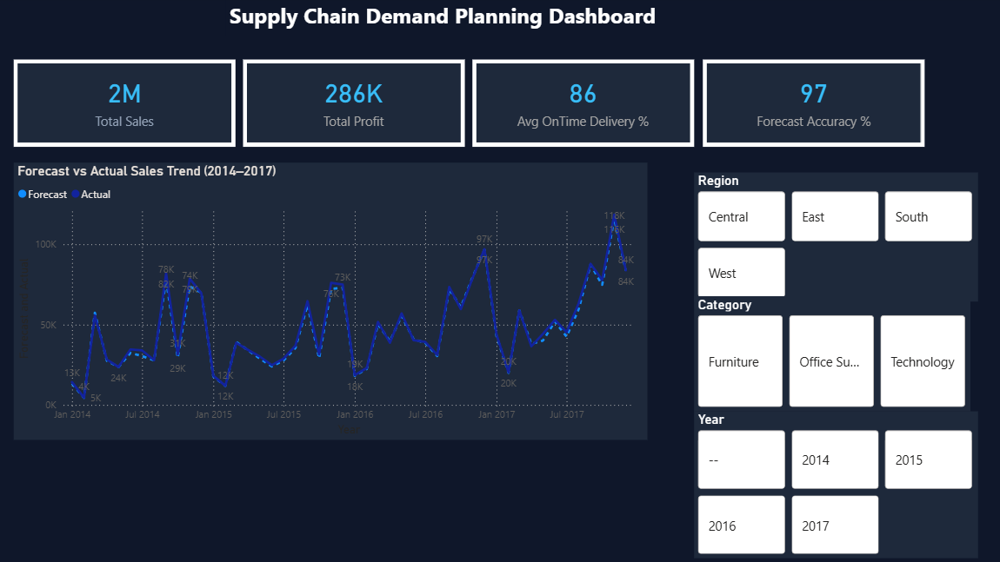
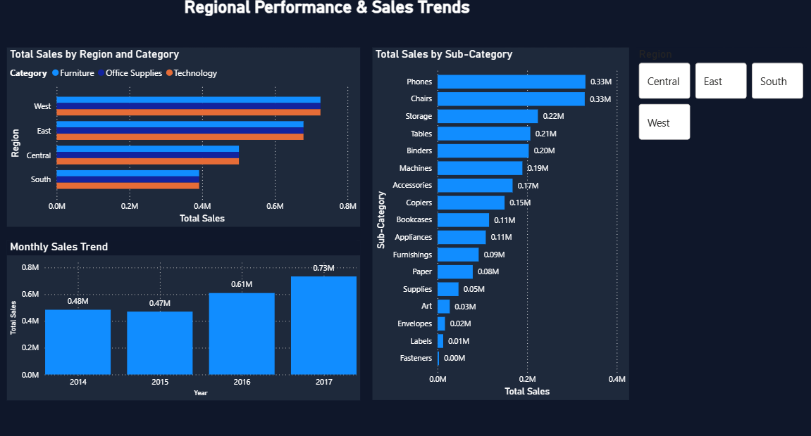

An end-to-end Power BI dashboard built on real supply chain data — tracking forecast accuracy, sales trends, regional performance and supplier health across 4 years of data (2014–2017).
Total revenue tracked across all regions and categories
Demand forecast accuracy measured against actual sales
Supplier on-time delivery rate across all vendors
Total profit tracked with category and regional breakdown

The main dashboard page displays four headline KPI cards — Total Sales, Total Profit, Avg On-Time Delivery % and Forecast Accuracy % — followed by a monthly line chart comparing Forecast vs Actual Sales from January 2014 to December 2017. The dashed line represents forecast and the solid line represents actual, making variance immediately visible. Three slicers (Region, Category, Year) allow dynamic filtering of all visuals simultaneously.
Key insight: Strong seasonal peaks visible every Q4 — consistent with retail demand cycles. Sales grew from 0.48M (2014) to 0.73M (2017), a 52% increase over 4 years.
DAX used: Forecast Accuracy % measure using SUMX and MIN/MAX logic, KPI card measures for Total Sales and Profit, slicer-driven filtering via relationships.

Page 2 breaks down performance across four regions (West, East, Central, South) with a clustered bar chart segmented by product category. The Sub-Category bar chart on the right ranks all 17 sub-categories by revenue — Phones and Chairs lead at $0.33M each. The bottom left shows annual sales growth from 2014 to 2017. A Region slicer allows filtering all three charts simultaneously for deep-dive analysis.
Key insight: West region leads all regions in sales across all three categories. Technology drives the highest revenue in East and West, while Office Supplies dominates Central.
Key insight: Phones ($0.33M) and Chairs ($0.33M) are the top sub-categories — together contributing over $0.66M, roughly 30% of total revenue.